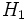
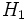
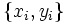
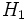

ist die Nullhypothese
ist die Nullhypothese  , dass die Mediane der verbundenen Stichproben gleich sind, während die Alternativhypothese  ein- oder beidseitig sein kann (siehe unten). Es wird berechnet:
, dass die Mediane der verbundenen Stichproben gleich sind, während die Alternativhypothese  ein- oder beidseitig sein kann (siehe unten). Es wird berechnet:
Der Vorzeichentest bei verbundenen Stichproben testet die Mediandifferenz zwischen Wertepaaren aus zwei einander entsprechenden Stichproben.
Für zwei einander entsprechende Stichproben , ist die Nullhypothese , dass die Mediane der verbundenen Stichproben gleich sind, während die Alternativhypothese  ein- oder beidseitig sein kann (siehe unten). Es wird berechnet:
 );wahr ist. Wenn , dann ist .
);wahr ist. Wenn , dann ist .Angenommen, der Signifikanztest einer gewählten Größe  soll durchgeführt werden (d.h., ist die Wahrscheinlichkeit, zurückzuweisen, wenn wahr ist; normalerweise ist ein kleiner Betrag wie 0,05 oder 0,01). Der zurückgegebene Wert von kann verwendet werden, um den Signifikanztest für die Mediandifferenz gegen verschiedene Alternativhypothesen durchzuführen, wie folgt:
soll durchgeführt werden (d.h., ist die Wahrscheinlichkeit, zurückzuweisen, wenn wahr ist; normalerweise ist ein kleiner Betrag wie 0,05 oder 0,01). Der zurückgegebene Wert von kann verwendet werden, um den Signifikanztest für die Mediandifferenz gegen verschiedene Alternativhypothesen durchzuführen, wie folgt:
wird zurückgewiesen, wenn .wird zurückgewiesen, wenn wird zurückgewiesen, wenn Weitere Einzelheiten zu dem Algorithmus finden Sie unter nag_sign_test (g08aac).